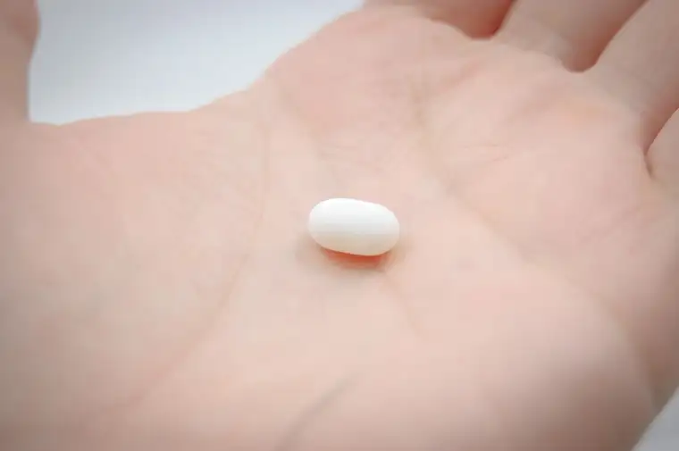

Let’s talk about the abortion pill, starting with the hard truth that about two-thirds of abortions today happen through a pregnant woman ingesting mifepristone. The drug prevents her fetus from receiving nutrients, ultimately resulting in the pre-born child’s death. Yes, most abortions are now induced through this method.

But let’s not just talk about it. We’d better start praying about it, too, if we haven’t already. By the end of June, we’ll know whether the U.S. Supreme Court agrees that the drug should be restricted, based on a lawsuit filed in November 2022 by the Alliance for Hippocratic Medicine, an organization of pro-life doctors, against the U.S. Food and Drug Administration (FDA).
The organization contends that the FDA did not properly vet the safety of mifepristone before approving it in 2000 or loosening its restrictions in 2016 and 2022. No case has had greater implications for abortion in our nation since Roe vs. Wade was overturned in June of 2022.
We who pray for an end to abortion at our local abortion facility understand this, and we have been praying for the drug’s restriction. As mifepristone usage has increased and become more accessible—including through the mail—we’ve made important adjustments, like staying longer in the day when abortions are scheduled to let women leaving know that if they’ve taken the abortion pill, their baby’s life could still be saved. We’ve also created signs with “abortionpillreversal.com” prominently placed to let them know how to get help.
Recently, I listened to a podcast from late October 2023 featuring one of the plaintiffs in the abovementioned case. Dr. Christina Francis, CEO of the American Association of Pro-Life Obstetricians and Gynecologists, shared that despite misinformation concerning the abortion-reversal procedure’s safety and effectiveness, approximately 4,500 babies have been saved through their mother taking natural progesterone to reverse mifepristone’s effects.
It just makes sense. After my miscarriage in May 1999, I sought help to prevent another miscarriage after I learned, with gladness, of a subsequent pregnancy. With guidance from the Saint Paul VI Institute and my local doctor’s cooperation, I was put on a regimen of natural progesterone to prevent another miscarriage. We happily welcomed that child into the world the following May.
For the abortion-pill reversal to work, the progesterone must be taken within a certain timeframe, but when done so, there is a 70 percent chance of saving the child’s life. As Dr. Francis noted in the podcast, it is, in a very real sense, a second chance for women who regret having taken the pill to abort their children.
Often, she shared, women seeking this second chance say they felt forced into the abortion, but very soon after taking the abortion pill, they knew it was wrong. One woman who had the reversal done told her she’s so grateful this option exists and that she will soon get to meet her baby.
Imagine entering an abortion facility—and everything it took to get there—but realizing it was a mistake, and not having a way to undo that decision. That is often the case. Now imagine the same scenario but with an option for that decision to be reversed, and for the child that almost slipped through your fingers to, once again, be a possibility. I would imagine all of heaven rejoicing!
I’ve often said that our God is a God of second chances. How many times have we messed up and been forgiven by our merciful Father? The more that evil enters the world, the more God unleashes his grace (Romans 5:20), so of course, when a life-destroying drug comes onto the scene, so does a way to reverse that devastating action. I wish I could hug the doctor who put this brilliant method in place!
Ultimately, it would be even more of a blessing if the pill were not so readily available. I haven’t even begun sharing how devastating this drug can be for the moms who buy into the temptation, believing it’s an easy in-and-out, only to find themselves faced with flushing their dead child down the toilet of their own bathroom. This scenario has played out, along with other horrors, as a result of this pill, but perhaps that’s for another column.
For now, I implore you, good people of God, to pray that truth and justice will prevail, and that this drug, with its lack of restrictions and tragic effects, will soon become just an unfortunate note in the annals of history.
[Note: I write about my experiences praying for the end to abortion at the sidewalk abutting the Red River Valley’s lone abortion facility for New Earth magazine — the official news publication of the Fargo Diocese. I hope you find “Sidewalk Stories” helpful in understanding the truth about abortion and how it plays out tragically in our corner of the world. The preceding ran in New Earth’s May 2024 issue.]